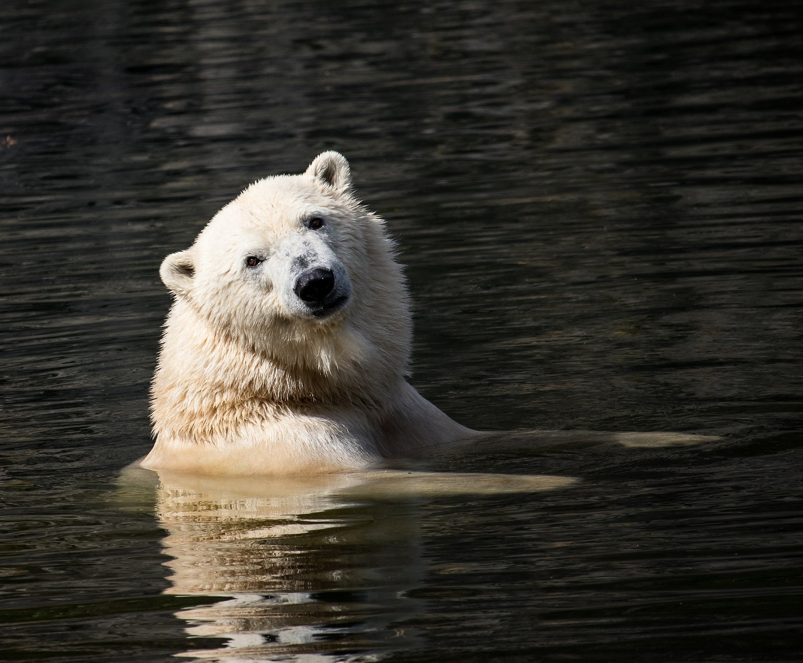

DO YOU WANT TO SAVE POLABEAR ??
As for the polar bears, they spend most of their time on floating sheets of sea ice hunting for their favorite food, seals. But as the Arctic has warmed in recent years, the ice is melting earlier. This gives the bears less time to hunt. So some bears might not be able to build up the fat they need to survive the rest of the year.
We can all contribute to reducing climate change, and therefore help polar bears and other endangered species. A significant cause of climate change is the emission of polluting gases from burning fossil fuels, such as coal and oil. Fossil fuels are burned when we use electricity or drive our cars, among other things.
polar bear on ice floe
The number of polar bears is dropping. Further global warming could threaten the entire species.
Here are just a few important things we can do to help reduce global warming:
Use our cars less (walk or take public transport whenever possible)
Use energy efficient light bulbs (these are available in most household stores — encourage your parents and teachers to buy them!)
Recycle more and avoid products that have lots of packaging.
Turn off electric devices when you're not using them.
